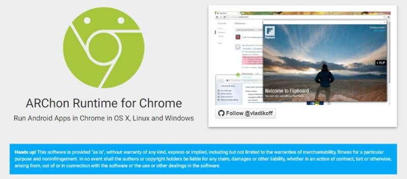
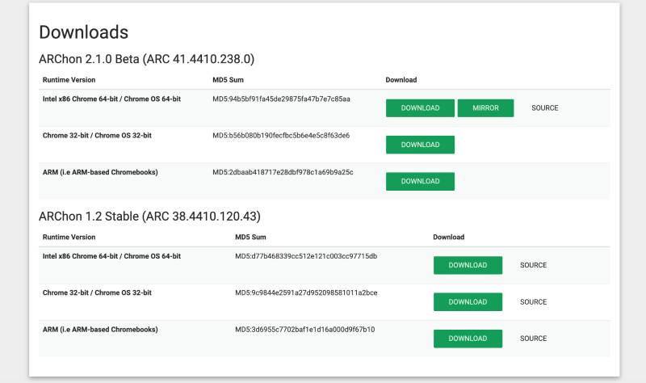
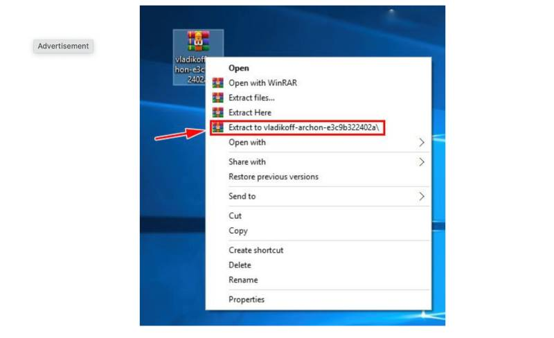
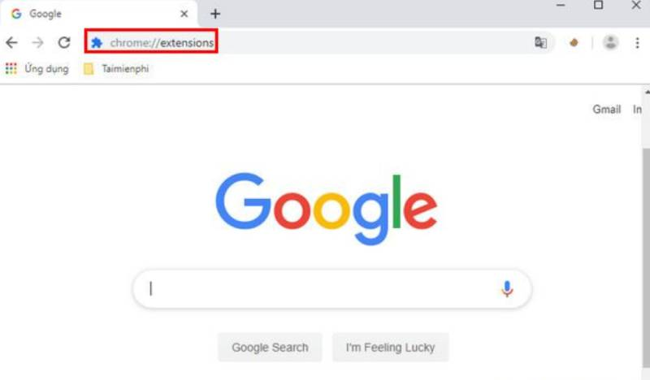
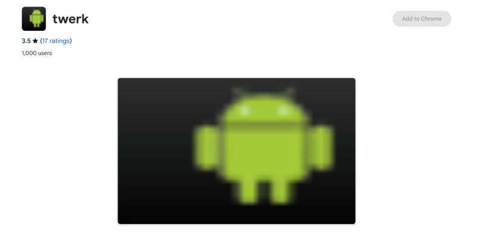
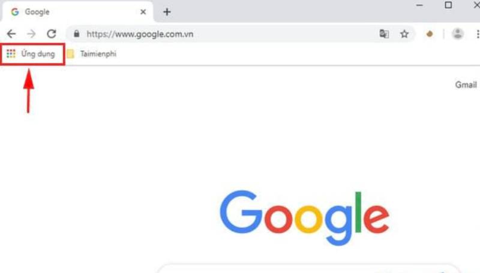

Cài app 11bet trên Laptop / Máy tính /
PC bằng ARChon giả lập Android
POSTED ON 14
THÁNG MƯỜI HAI, 2023
BY TRƯƠNG VIỆT HOÀNG
Hướng dẫn cách cài đặt phần mềm giả lập ARChon cho máy
tính
Để cài app 11bet trên Laptop / Máy tính / PC bằng ARChon giả
lập Android, trước tiên anh em cần thực hiện các bước tải và
cài đặt phần mềm giả lập ARChon. Các thao tác cài đặt phần
mềm cần thực hiện như sau:
Bước 1: Đầu tiên, anh em truy cập vào trang web chính thức của
phần mềm ARChon về máy tính.

Truy cập vào trang web chính thức của ARChon
Bước 2: Anh em lựa chọn phần mềm phù hợp với hệ điều hành
trên máy tính của mình để tải về. Do nhà cung cấp có cung
cấp link tải cho nhiều dòng thiết bị khác nhau nên
anh em có thể tải về với nhiều đường dẫn tương
ứng.

Lựa chọn phần mềm phù hợp với máy để tải về
Bước 3: Sau khi tải về, anh em tiến hành giải nén file đã tải
và cài đặt theo hướng dẫn của nhà phát hành.

Tiến hành giải nén file và cài đặt hướng dẫn của
nhà phát hành
Bước 4: Vì phần mềm ARChon chạy app android dựa vào trình duyệt
chrome nên anh em cần cài đặt thêm extensions để kích hoạt
chế độ cho nhà phát hành. Sau đó, anh em cài
thêm extensions Twerk bằng cách Add to Chrome là xong.
Xem thêm: Cài
app 11bet trên Laptop / Máy tính / PC bằng Android
Studio giả lập Android chi tiết

Cài đặt extensions để kích hoạt chế độ cho nhà
phát hành ARChon
Bước 5: Anh em quay trở lại Chrome, nhấn vào phần ứng dụng và khởi
động extensions Twerk.

Khởi động extensions Twerk
Cài app 11bet trên Laptop / Máy tính / PC bằng ARChon
giả lập Android chi tiết
Sau khi anh em đã cài đặt được phần mềm ARChon về máy của
mình, tiếp đến anh em phải làm thế nào mới cài app 11bet
trên Laptop / Máy tính / PC bằng ARChon giả lập Android?
Bước 1: Anh em vào trang chính thống của nhà cái 11bet để tải app
nhà cái về máy tính. Anh em nhớ tải file apk thuộc hệ
điều hành Android nhé.
Tải file apk 11bet về máy tính
Bước 2: Sau khi đã thực hiện thủ thuật công
nghệ tải file về, anh em kéo file vào cửa sổ
Twerk. Tiếp đến anh em vào thư viện ứng dụng trên Chrome để tìm
app của nhà cái 11bet.

Mở ứng dụng của Chrome để tìm kiếm app 11bet
Bước 3: Khi đã tìm thấy app 11bet, anh em chỉ cần mở lên đăng
ký tài khoản, đăng nhập, nạp tiền và trải nghiệm trò
chơi tại đây mà không sợ bị chặn như khi truy cập ở thẳng
trên trang web nhé.